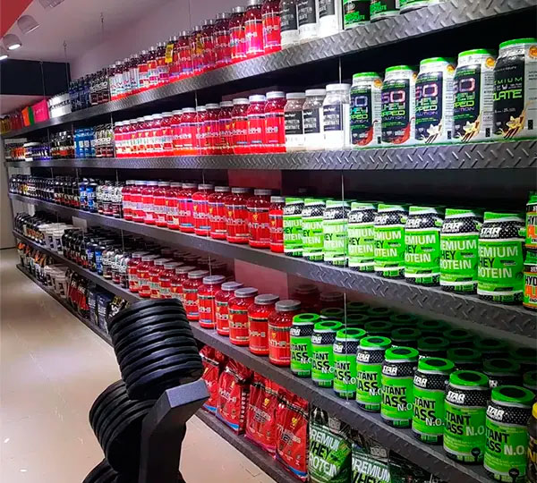
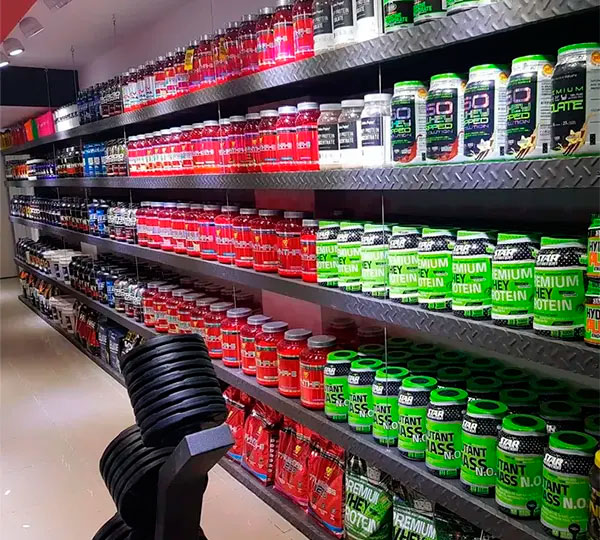

Nuestros Servicios Destacados:
- Asesoría Personalizada en Gimnasios: Nuestros entrenadores altamente calificados te brindarán un plan de ejercicios personalizado adaptado a tus objetivos, nivel de condición física y preferencias. Trabajaremos contigo para optimizar tu rutina de entrenamiento y garantizar que estés realizando ejercicios de manera segura y eficiente.
- Programas Nutricionales Personalizados: La nutrición es fundamental para el éxito en el fitness. Te proporcionaremos orientación experta en la planificación de comidas, recomendaciones de suplementos y estrategias dietéticas que se alineen con tus objetivos, ya sea ganar masa muscular, perder peso o mejorar tu rendimiento deportivo.
- Venta de Suplementos de Calidad: Contamos con una selección de suplementos de alta calidad para respaldar tus necesidades nutricionales y de rendimiento. Nuestro equipo te asesorará en la elección de los suplementos más adecuados para ti, asegurando que estés obteniendo los nutrientes esenciales que tu cuerpo necesita.
- Seminarios y Talleres: Ofrecemos seminarios y talleres periódicos sobre temas relevantes, desde técnicas de levantamiento de pesas hasta consejos de nutrición, para que puedas aprender y mantener tu motivación al máximo.
 
